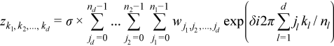

Intel® oneAPI Math Kernel Library Developer Reference - Fortran
The general form of the discrete Fourier transform is

for kl = 0, ... nl-1 (l = 1, ..., d), where σ is a scale factor, δ = -1 for the forward transform, and δ = +1 for the inverse (backward) transform. In the forward transform, the input (periodic) sequence {wj1, j2, ..., jd}belongs to the set of complex-valued sequences and real-valued sequences. Respective domains for the backward transform are represented by complex-valued sequences and complex-valued conjugate-even sequences.
The Intel® oneAPI Math Kernel Library (oneMKL) provides an interface for computing a discrete Fourier transform through the fast Fourier transform algorithm. Prefixes Dfti in function names and DFTI in the names of configuration parameters stand for Discrete Fourier Transform Interface.
The manualdescribes the following implementations of the fast Fourier transform functions available in Intel® oneAPI Math Kernel Library:
Intel® oneAPI Math Kernel Library also supports the FFTW3* interfaces to the fast Fourier transform functionality for shared memory paradigm (SMP) systems.
Both FFT and Cluster FFT functions compute an FFT in five steps:
Allocate a fresh descriptor for the problem with a call to the DftiCreateDescriptor or DftiCreateDescriptorDM function. The descriptor captures the configuration of the transform, such as the dimensionality (or rank), sizes, number of transforms, memory layout of the input/output data (defined by strides), and scaling factors. Many of the configuration settings are assigned default values in this call which you might need to modify in your application.
Optionally adjust the descriptor configuration with a call to the DftiSetValue or DftiSetValueDM function as needed. Typically, you must carefully define the data storage layout for an FFT or the data distribution among processes for a Cluster FFT. The configuration settings of the descriptor, such as the default values, can be obtained with the DftiGetValue or DftiGetValueDM function.
Commit the descriptor with a call to the DftiCommitDescriptor or DftiCommitDescriptorDM function, that is, make the descriptor ready for the transform computation. Once the descriptor is committed, the parameters of the transform, such as the type and number of transforms, strides and distances, the type and storage layout of the data, and so on, are "frozen" in the descriptor.
Compute the transform with a call to the DftiComputeForward/DftiComputeBackward or DftiComputeForwardDM/DftiComputeBackwardDM functions as many times as needed. Because the descriptor is defined and committed separately, all that the compute functions do is take the input and output data and compute the transform as defined. To modify any configuration parameters for another call to a compute function, use DftiSetValue followed by DftiCommitDescriptor (DftiSetValueDM followed by DftiCommitDescriptorDM) or create and commit another descriptor.
All the above functions return an integer status value, which is zero upon successful completion of the operation. You can interpret a non-zero status with the help of the DftiErrorClass or DftiErrorMessage function.
The FFT functions support lengths with arbitrary factors. You can improve performance of the Intel® oneAPI Math Kernel Library FFT if the length of your data vector permits factorization into powers of optimized radices. See theIntel® oneAPI Math Kernel Library Developer Guide for specific radices supported efficiently.
The FFT functions assume the Cartesian representation of complex data (that is, the real and imaginary parts define a complex number). The Intel® oneAPI Math Kernel Library Vector Mathematical Functions provide efficient tools for conversion to and from polar representation (see Example "Conversion from Cartesian to polar representation of complex data" and Example "Conversion from polar to Cartesian representation of complex data").
Optimization Notice |
|---|
Intel's compilers may or may not optimize to the same degree for non-Intel microprocessors for optimizations that are not unique to Intel microprocessors. These optimizations include SSE2, SSE3, and SSSE3 instruction sets and other optimizations. Intel does not guarantee the availability, functionality, or effectiveness of any optimization on microprocessors not manufactured by Intel. Microprocessor-dependent optimizations in this product are intended for use with Intel microprocessors. Certain optimizations not specific to Intel microarchitecture are reserved for Intel microprocessors. Please refer to the applicable product User and Reference Guides for more information regarding the specific instruction sets covered by this notice. Notice revision #20110804 |